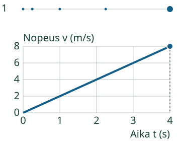
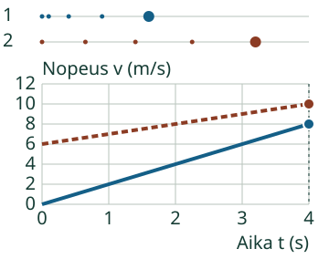
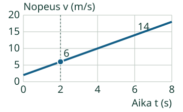
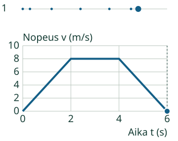

Aava: Tutkitaan Loikan nopeutta.
Luen viivasta kiihtyvyyden.
Vertaa nopeuden muutosta samassa ajassa.
Pohdi ensin: Voiko nopeampi kappale kiihtyä hitaammin?
Mistä tämän huomaa?
Nopeuden muutos, ei pelkkä korkeus
Loikan nopeus kasvaa 0 → 8 m/s ajassa4s. Yhdessä sekunnissa nopeuteen tulee2m/s lisää.
Kiihtyvyys on nopeuden muutos jaettuna kuluneella ajalla: (8 − 0) / (4 − 0) = 2 m/s². Suoran jyrkkyys pysyy samana.

Korkeammalla ei tarkoita suurempaa kiihtyvyyttä
Aavan nopeus kasvaa 6 → 10 m/s. Loikan nopeus kasvaa 0 → 8 m/s samassa4sekunnissa. Aavan viiva on ylempänä, mutta Loikan viiva on jyrkempi.
Loikan kiihtyvyys on8/4 = 2m/s², Aavan4/4 = 1m/s². Vertaa muutoksia samassa ajassa.

Vaakaviiva ei ole aina lepoa
Kun nopeus pysyy4m/s:ssa, kiihtyvyys on0 ja Loikka liikkuu. Nollanopeudessa se on paikallaan. Jarrutusmallissa nopeus pienenee8→0m/s: muutos on−8m/s, joten kiihtyvyys on−2m/s².
Kokeile itse
Nopeus on hetkellä 2 s 6 m/s ja hetkellä 6 s 14 m/s. Laske välin keskimääräinen kiihtyvyys.
Tehtävällä on oma kuvaajansa. Voit vastata suoraan tai palata esimerkkiin ja käyttää apua. Ylemmän mallin katsominen ei ole pakollista.
Loikka

Ajattelun tueksi
Nopeuden muutos on 14 − 6 = 8 m/s. Aikaa kuluu 6 − 2 = 4 s, ei 6 s.
Kuvaajan tiedot taulukkona
| t (s) | Loikka x (m) | Loikka v (m/s) |
|---|---|---|
| 0 | 0 | 2 |
| 1 | 3 | 4 |
| 2 | 8 | 6 |
| 3 | 15 | 8 |
| 4 | 24 | 10 |
| 5 | 35 | 12 |
| 6 | 48 | 14 |
| 7 | 63 | 16 |
| 8 | 80 | 18 |
Vertaa uuteen tilanteeseen
Sama päätenopeus, eri tapahtumat välissä
Loikan nopeus kasvaa ensin0→8m/s, pysyy hetken8m/s:ssa ja pienenee sitten nollaan. Nousu kertoo positiivisesta, vaakasuora nollasta ja lasku negatiivisesta kiihtyvyydestä.

Kello2s→6s tarkoittaa4sekunnin väliä. Loppulukema6s ei yksin ole kulunut aika. Laske sekä nopeuden että ajan muutos.
Opettajalle ja ilman ruutua
Luokat 7–9. Kanoninen rooli process säilyy; pakollinen esitieto on PHY79-ACCEL-CONCEPT. Harjoitellaan nopeuden muutoksen ja viivan jyrkkyyden tulkintaa, merkin erottamista ja nimettyjä aikavälejä. Numeerinen keskimääräinen kiihtyvyys esitellään tässä pienillä luvuilla; se ei yksin osoita koko kuvaajanlukuprosessin hallintaa.
Piirtäkää samaa suoraviivaista kävelyä kuvaava paikka–aika- ja nopeus–aika-kuva. Kirjatkaa paikka yhtä pitkien aikavälien päätteissä. Pyytäkää perustelemaan, miksi vaakaviiva nollan yläpuolella tarkoittaa liikettä ja miksi kellon alkuhetki vähennetään loppuhetkestä. Ruutumalli ei todista oikean fyysisen mittauksen osaamista.
Malli kulkee suoralla oikealle, lähtöpaikka on 0 m ja suunnattu nopeus on vähintään0. Tässä rajauksessa paikka ja kuljettu matka ovat samat; yleisesti ne ovat eri suureita. Nopeus on paloittain lineaarinen ajan funktio. Paikka saadaan sen täsmällisestä integraalista, ja kuvaajan toisen asteen osat piirretään täsmällisinä Bézier-kaaren osina. Vaiheen vaihtumiskohdassa erisuuntaisten kiihtyvyyksien yhteistä hetkellistä derivaattaa ei väitetä tunnetuksi. Näissä tehtävissä käytetään ilmoitetun välin muutosta.
Vain nimetyt äärelliset mallit, metrit ja sekunnit, ilmoitetut alueet, akselit, askel, yhden sekunnin ajanmerkit ja toistonopeus. Tuntematon malli, yksikkö, ohjaus tai arvo ei korvaudu oletuksella. Negatiiviset nopeudet, suunnanvaihdot, voimat ja 2D-radat eivät kuulu tähän toteutukseen. Negatiivinen kiihtyvyys ei yleisesti tarkoita vauhdin pienenemistä muissa suunnissa.
Paikallinen palaute koskee nykyistä matalan kynnyksen harjoitusta. Ei henkilökohtaista historiaa, formaalia itsenäistä/viivästettyä näyttöä tai koko prosessin arviointirubriikkia. Esimerkki, vihje ja taulukko ovat tukea. Ei pakollista puhetta, kuuntelua, nimeämistä, aikarajaa tai tiettyä klikkausreittiä. Oppilasymmärrystä, vaikuttavuutta, täydellistä manuaalista saavutettavuutta ja julkaisuoikeuksia ei ole hyväksytty.
Lopuksi: Miksi suuri nopeus ei tarkoita suurta kiihtyvyyttä? Mitä tarvitset kuvaajan jyrkkyyden laskemiseen?